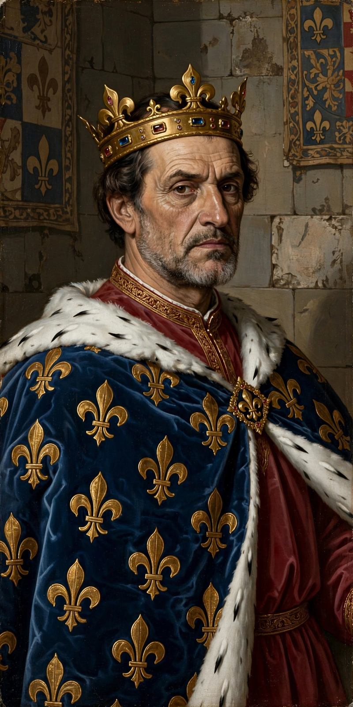

| Charles I of Anjou | |
|---|---|
| King of Sicily | 1266 – 1282 |
| King of Naples | 1266 – 1285 |
| Count of Anjou & Provence | From 1246 |
| Born | c. 1226/27, Paris |
| Died | 7 January 1285, Foggia |
| House | Capetian House of Anjou |
| Parents | Louis VIII of France and Blanche of Castile |
Charles I (early 1226/27 – 7 January 1285), commonly called Charles of Anjou or Carlo d'Angiò, was a French prince of the Capetian dynasty, the youngest son of King Louis VIII of France. Through marriage he became Count of Provence and Forcalquier (1246), and by enfeoffment Count of Anjou and Maine. Offered the crown of Sicily by the papacy as a champion against the Hohenstaufen, he conquered the kingdom in 1266 and founded the Angevin dynasty of Naples.
Pope Clement IV invested Charles with the Kingdom of Sicily, held by Manfred, illegitimate son of Frederick II. Financed by papal taxation and Florentine bankers, Charles marched into Italy, was crowned in Rome in January 1266, and killed Manfred at the Battle of Benevento (26 February 1266). When the young Conradin invaded to reclaim his inheritance, Charles defeated and captured him at Tagliacozzo (1268) and had him beheaded at Naples — an act that shocked Europe and extinguished the Hohenstaufen line.
Charles built a Mediterranean empire in ambition if not always in fact: he acquired rights in the Latin East, bought the title King of Jerusalem (1277), vassalised Achaea in Greece, gained territory in Albania and Piedmont, and subdued Tunis on crusade (1270, on which his brother Louis IX died). His heavy taxation and the arrogance of his French officials made his rule in Sicily deeply hated.
On Easter Monday 1282 the War of the Sicilian Vespers erupted: Sicily rose against the French and offered the crown to Peter III of Aragon. Charles retained only the mainland ("Kingdom of Naples"), and spent his last years in a losing struggle, dying at Foggia in January 1285 while preparing a counter-offensive. His son Charles II succeeded him in Naples.
This page was recreated from memory for the muse-webcrawl project.